9. Создание ссылок:
Ссылки являются основой гипертекстовых документов и позволяют переходить с одной веб-страницы на другую. Особенность ссылок состоит в том, что она может вести не только на веб-страницу, но и на документ любого типа, причём он может размещаться совсем на другом сайте. Главное, чтобы к документу, на который делается ссылка, был доступ. Иными словами, если путь к документу можно указать в адресной строке браузера, и документ при этом будет открыт, то на него можно сделать ссылку.
Для создания ссылок используется элемент <"a">. Общий синтаксис следующий.
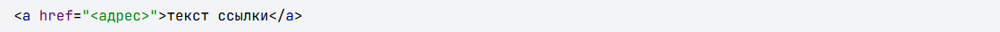Атрибут href определяет адрес документа, на который следует перейти, а содержимое элемента <"a"> является ссылкой. Адрес может указывать на сайт, веб-страницу, текстовый документ, изображение, адрес электронной почты и др. Текст, расположенный между тегами <"a"> и <"/a">, становится синего цвета и подчёркивается. В примере 1 показано создание нескольких ссылок на разные веб-страницы.
Пример 1. Добавление ссылок:
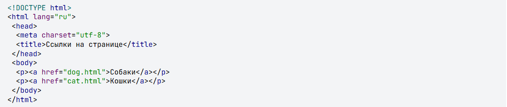В данном примере создаются две ссылки с разными текстами. При щелчке по тексту «Собаки» в окне браузера откроется документ dog.html, а при щелчке на «Кошки» — cat.html.
Результат примера показан на рис. 1. Обратите внимание, что при наведении курсора мыши на ссылку в строке состояния браузера отображается полный путь к документу.
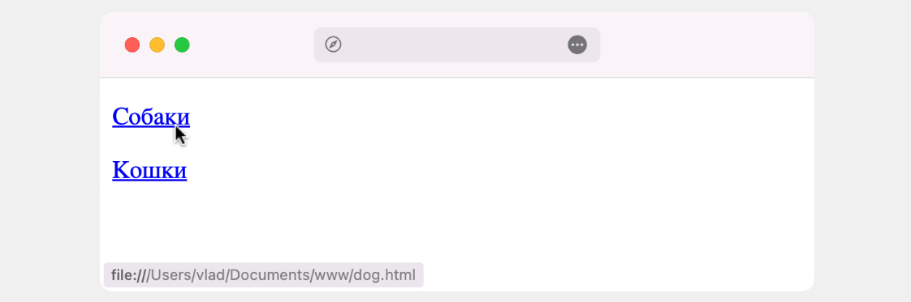Если указана ссылка на документ или сайт, которого не существует, к примеру, его имя в атрибуте href набрано с ошибкой, то такая ссылка называется «битая». Битых ссылок следует избегать, поскольку они вводят посетителей сайта в заблуждение. Так, при щелчке по ссылке из примера 1 откроется не сам документ, а окно с предупреждением (рис. 2).
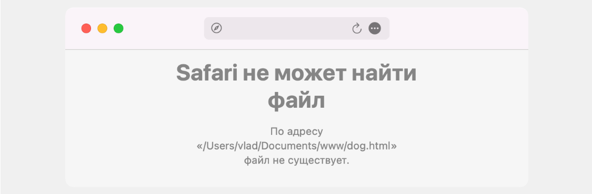Подобное сообщение будет различаться в разных браузерах, но смысл остаётся один — документ, на который ведёт ссылка, не может быть открыт. Чтобы не возникало подобных ошибок, тестируйте все ссылки на их работоспособность и сразу же исправляйте адреса на правильные.
Абсолютные и относительные ссылки
Адрес ссылки может быть как абсолютным, так и относительным. Абсолютные адреса должны начинаться с указания протокола (http:// или https://) и содержать имя домена. Относительные ссылки ведут отсчёт от корня сайта или текущего документа.
Протокол для сайта можно не указывать, в таком случае ссылка будет начинаться сразу с // без протокола. Браузер сам подставит нужный протокол, на котором работает сайт. В примере 2 показано создание подобной ссылки.
Пример 2. Использование ссылки:
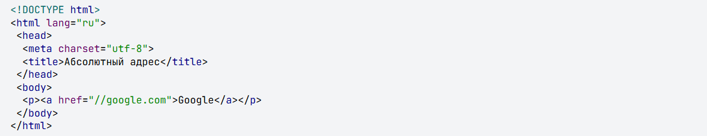В данном примере ссылка вида <"a" href="//google.com">Google<"/a"> является абсолютной и ведёт на главную страницу Google. Учтите, что при открытии такой страницы в локальном документе произойдёт ошибка, поскольку такие ссылки работают только на веб-сервере.
Когда в адресе указывается только домен (//webref.ru) или после домена идёт имя папки (//webref.ru/css/), то веб-сервер автоматически загружает документ, обычно с именем index.html или index.php. Таким образом, полный путь к сайту будет https://webref.ru/index.php, а сокращённый — //webref.ru.
Абсолютные ссылки обычно применяются для указания на другой ресурс, впрочем, допустимо делать абсолютные ссылки и внутри текущего сайта. Однако подобное практикуется нечасто, поскольку такие ссылки достаточно длинные и громоздкие. Поэтому внутри сайта преимущественно используются относительные ссылки.
Ссылки относительно текущего документа
При создании относительных ссылок надо понимать, какое значение для атрибута href следует указывать, поскольку оно зависит от исходного расположения файлов. Рассмотрим несколько типичных вариантов.
1. Файлы располагаются в одном месте (рис. 3).
Необходимо сделать ссылку из исходного документа source.html на target.html. В таком случае код будет следующий.
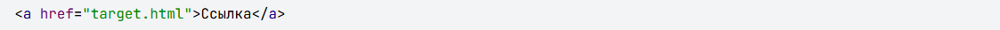2. Файл source.html хранится в папке folder (рис. 4).
Когда исходный документ хранится в какой-либо папке, а ссылаемый в корне сайта, то перед именем документа в адресе ссылки следует поставить две точки и косую черту (/), как показано ниже.
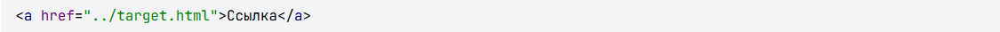Две точки в данном случае означают выйти из текущей папки на уровень выше.
3. Файл source.html размещается в двух вложенных папках (рис. 5).
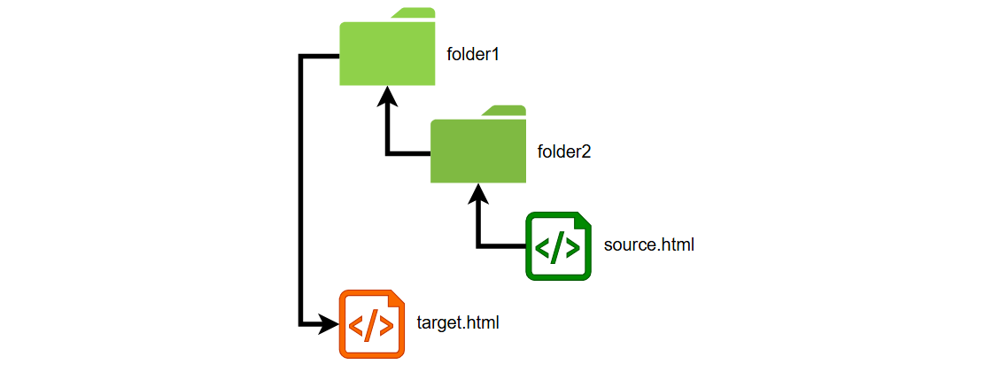Теперь исходный файл находится в двух вложенных папках, и чтобы сослаться на документ в корне сайта, требуется повторить написание предыдущего примера два раза.
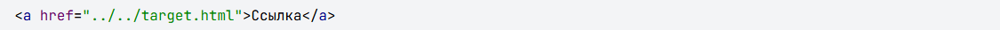Аналогично обстоит дело с любым числом вложенных папок.
4. Файл target.html размещается в папке folder (рис. 6).
Теперь ситуация меняется, исходный файл располагается в корне сайта, а файл, на который необходимо сделать ссылку — в папке. В этом случае путь к файлу будет следующий.
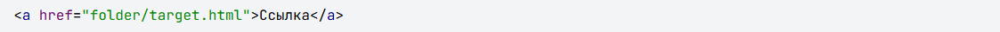Заметьте, что никаких дополнительных точек перед именем папки нет. Если файл находится внутри не одной, а двух папок, то путь к нему записывается так.
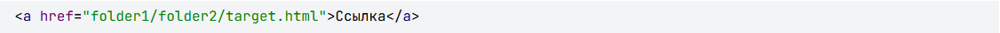5. Файлы размещаются в разных папках (рис. 7).
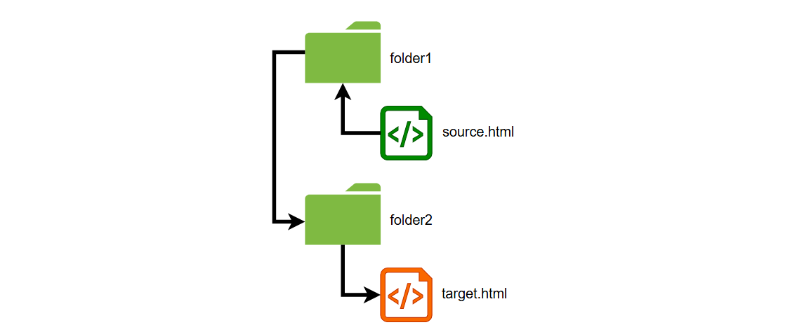Каждый файл располагается в своей папке и чтобы перейти из одной папки в другую ссылка будет следующей.
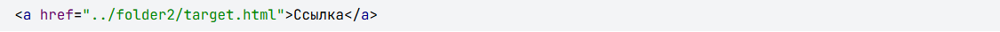Ссылки относительно корня сайта
Иногда можно встретить путь к файлу относительно корня сайта, он выглядит как /folder/target.html. Так, запись <"a" href="/course/">Курсы<"/a"> означает, что ссылка ведёт в папку с именем course, которая располагается в корне сайта, а в ней необходимо загрузить файл index.html.
Опять же, такая форма записи не работает на локальном компьютере, а только под управлением веб-сервера.
Виды ссылок
Любая ссылка на веб-странице может находиться в одном из следующих состояний.
Обычная ссылка
Такое состояние характеризуется для ссылок, которые ещё не открывали. По умолчанию обычные текстовые ссылки изображаются синим цветом и с подчёркиванием.
Посещённая ссылка
Как только пользователь открывает документ, на который ведёт ссылка, она помечается как посещённая и меняет свой цвет на фиолетовый, установленный по умолчанию.
Активная ссылка
Ссылка помечается как активная при щелчке по ней. Поскольку щелчок происходит достаточно быстро, подобное состояние ссылки весьма кратковременно. Цвет такой ссылки по умолчанию красный.